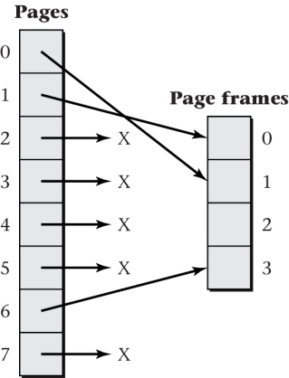
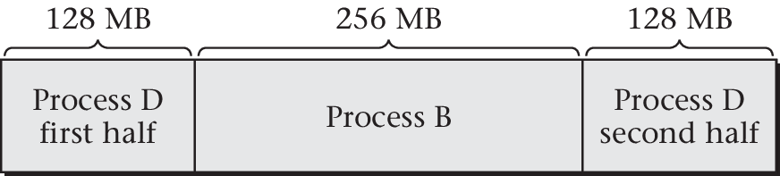
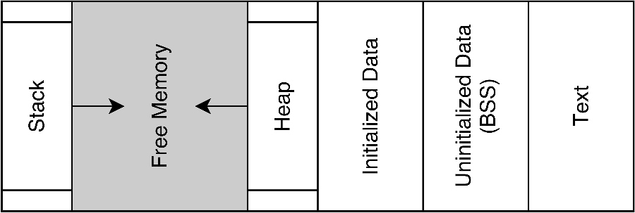

01. Introduction
Data:
Any information that can be encoded and decoded in 0s and 1s, is called Data.
Usually data is stored in a file on PC HDD (hard disk drive), or SSD (solid state drive).
- Data from HDD or SSD is first loaded in RAM, prior to operation on it.
- A file that hold data and is stored on HDD or SSD is called DATABASE
Data Structure:
The Structure used to store data on HDD or SSD is called Data Structure
Most common used Data Structure for storing data in RAM are:
- ARRAYS
- STACK
- QUEUE
- Heap
- Structure
- Linked List
Algorithm:
A procedure or steps followed to solve any computational problem is called algorithm.
An algorithm can be:
- Written in human understandable language, such as English, Hindi, and so on...
- Written in programming language, such as C, C++, Java, Python, and so on...
Example of Algorithm:
Let's say we want to write an algorithm to shoot a movie.
To achieve the target, we need to break the problem in steps:
- Buy a Camera,
- Buy Storage Space for videos
- Buy the PCs for video editing
- Hire a team of individuals to shoot the videos
- Hire someone who knows video editing
- Shoot the videos
- Edit the videos
- Release the movie
The above mentioned steps, can be considered as an algorithm for shooting a movie. Similarly, you can write your own steps to solve a problem and that will be your algorithm.
How programs work?
Programs are just 0s and 1s. These 0s and 1s are loaded in RAM, and thereafter are transferred to processor for execution.
The processor calculates the result and stores it back in RAM. The process above is controlled by Operating System.
OS Virtual Memory

Process Inside RAM

Application Virtual Memory

Application Virtual Memory
A part of memory from RAM is allocated to the application. The memory addresses provided to the application are not physical rather they are generated by OS.
Hence, due to virtual addresses provided to application, the memory is often referred as Application Virtual Memory

The above figure represents 4 parts of application memory. Each part has its own use and importance. We will provide short description of each part.
Text:
The text area holds the application 0s and 1s.
Usually these 0s and 1s are stored on HDD in form of executable file.
The format of storing the executable varies as per the OS.
Example: * Windows : .exe, .msi * Linux: No Extension needed * Mac: .app
Environment Variables
This portion of memory is stores environment variables for our program.
Environment variables are used to store information such as: * path to executables for our application * path to libraries for our application
And it is also used for various other purposes. Due to limited scope of this content, we will not discuss it in detail.
Heap
Heap is a part of memory that stores data of our application till the program execution ends.
Heap is mainly used during the Dynamic Memory Allocation.
Dynamic Memory Allocation is a process of allocating memory to program during runtime. It allows us to change the memory size of some variable.
In case of Dynamic memory allocation we can: * Allocate custom memory to application (let's say 100 bytes)
- Now in future we needed more memory. So, we can ask Operating System to allocate more memory to our previous created variable.
Stack
Stack is a part of memory that stores data for a small instance of time. In case of programs, function variables are stored inside of STACK.
Whenever a function returns some value, the variable is destroyed from RAM.
In the program below the age variable will be created and deleted 100 times, because it is formed inside of STACK Example:
int main(){
// creating the loop
// to demonstrate stack nature
for(int i=0; i<100; ++i){
int age = 10;
age += 2;
printf("%d ", age);
}
return 0;
}
OS Overview:
The OS can be visualized as: * OS * Softwares * Applications * Programs
In case of functional programming: * Application * Programs * Functions * Statements
In case of Object Oriented Programming: * Application * Programs * Objects * Classes * Methods + Fields * Statements
After Visualizing the above content, we can infer that, in case of functional programming:
-
Applications are made up of programs, which are our individual source code files
-
Each source code file has functions, which further has statements.
What is DSA?
DSA stands for DATA STRUCTURES AND ALGORITHMS. In DSA we study, the science to implement the ideas in programs using,Data Structures (arrays, linked list) and Algorithms (bubble sort, selection sort).
Main motives of DSA is to teach you : * How to think like a programmer? * How to break a problem in parts? * How to implement the solution. * How to use the existing tools to model a new concept.
DSA is most important, if : * You want to learn Programming * You want to learn Hacking. * You want to patch the securities of your system. * You want to understand the working of OS. * And, there are lot more uses of DSA.
Getting Started
To introduce the DSA, we can use any programming language. But to be consistent, we will use one languages: C in the following tutorials.
If you want to learn about Data Structure, in any other language, then the concepts discussed in this series of lessons, will remain same. So, feel free to implement the algorithms in any other language language, if you like.
Try to solve the problems yourself, that makes you learn faster and better.
Tools Needed
Option 1
We need few tools to get started: * Text Editor * GCC Compiler
In case of text editor, we recommend you to use Sublime Text or Atom or VS Code and GCC compiler can be downloaded from MinGW site.
For Windows:
Note: In order to use the GCC compiler from command line interface in windows, we need to add the installation directory to path. To add the compiler to path follow the steps below: * Navigate to the Compiler Installation directory * Now navigate in bin directory inside compiler installation directory * Copy the complete path: C:\MinGW\bin\ or any other path * Hold the Alt button and double click on 'This Pc' from desktop * Now Select 'Advanced System Settings' from left sidebar * Search for Environment variables inside of 'Advanced' tab and click it. * Now, add the copied path here. * In order to make the changes reflect in your system. Reboot it.
For Linux
You can use apt or yum package manager
sudo apt install build-essential
If you are confused in setting up your text editor and Compiler, then follow Option 2
Option 2
We can also use a software called as IDE (INTEGRATED DEVELOPMENT ENVIRONMENT).
- CodeBlocks
- DevCpp
- Netbeans
- Geany
are some of the IDEs that can be used to follow along.
Theory or Practical:
We try to discuss every topic using a practical approach but there are a few concepts, which needs to just told.
So, about 90% of this book after introduction section will be practical. We are happy to get started on our journey with you.
The content discussed in this book uses latest programming tools such as: * C11 version of c language * Text Editors used in real world app development. * Solutions using multiple approaches.
What's Next?
In next, lesson we will start discussing, stack and will try to understand how OS creates the stack. After understanding the concept we will try to implement it on our own.
So, let's get started!!!